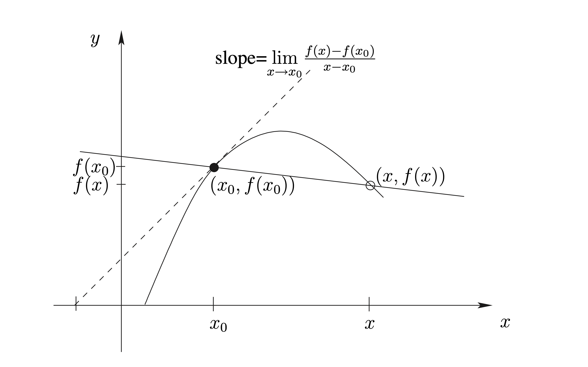
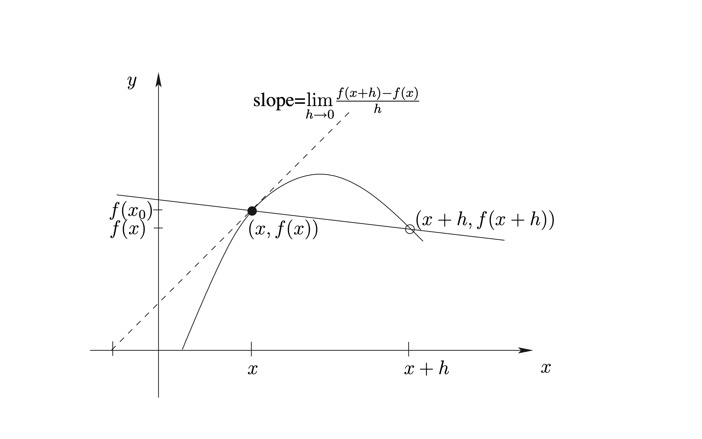

บทที่ 3 อนุพันธ์ (Derivatives)
3.1 อนุพันธ์ (Derivatives)
จากตัวอย่า 2.1 ในบทที่ 2 และเนื้อหาในเรื่อง limits เราจะเห็นว่า ความชันของเส้นสัมผัสกราฟของฟังก์ชัน \(y=f\left( x\right)\) ณ จุด \(\left( x_{0},f\left( x_{0}\right) \right)\) บนกราฟ ก็คือ \(\underset{x\rightarrow x_{0}}{\lim}\frac{f\left( x\right) -f\left( x_{0}\right) }{x-x_{0}}\) นั่นเอง (ถ้า limit หาค่าได้)

ปริมาณนี้มีความสำคัญ เพราะนำไปประยุกต์ใช้ได้มากมาย เราจึงกำหนดสัญลักษณ์และมีชื่อเรียกดังต่อไปนี้
นิยาม 3.1 ถ้า \(f : D_f \rightarrow \mathbb{R}\) โดยที่ \(D_f \subseteq \mathbb{R}\) และถ้า \(\underset{x \rightarrow x_0}{\lim} \frac{f(x)-f(x_0)}{x- x_0}\) หาค่าได้แล้ว เรียกค่าของ limit นี้ว่า “อนุพันธ์ (derivative) ของ \(f\) ที่ \(x_0\)” และแทนด้วยสัญลักษณ์ \(f'(x_0)\)
เนื่องจากแต่ละ function \(g\) และแต่ละ \(x_0\) จะมี \(\underset{x \rightarrow x_0}{\lim}g(x)\) ได้ค่าเดียว ดังนั้น \(f'\) จึงเป็น function เรียกว่า “อนุพันธ์ (derivative)” ของ \(f\)
ในการเขียนนิยามของ \(f'(x)\) เพื่อใช้เป็นสูตรทั่วไปสำหรับ function \(f'\) เราเปลี่ยนตัวแปรเสียใหม่ ดังแสดงในรูป

จะได้ว่า
ตัวอย่าง 3.1 จงหาสมการของเส้นสัมผัสกราฟ \(y = -x^2 + 6x -2\) ณ จุด \(P_0(2,6)\)
วิธีทำ ให้ \(f(x) = -x^2 + 6x -2\) จะได้ค่าความชันของเส้นสัมผัส ณ จุด \((x,f(x))\) คือ \(f'(x)\) ซึ่งเท่ากับ \[\begin{equation} \begin{aligned} \underset{h \rightarrow 0}{\lim}\frac{f(x+h) - f(x)}{h} &= \underset{h \rightarrow 0}{\lim}\frac{\left[-(x+h)^2 + 6(x+h)-2 \right]- \left[ -x^2 + 6x -2 \right] }{h} \\ &=\underset{h \rightarrow 0}{\lim}\frac{-2xh-h^2+6h}{h} \\ &=\underset{h \rightarrow 0}{\lim}(-2x-h+6) \leftarrow \boxed{\mbox{ อย่าเขียน $\underset{h \rightarrow 0}{\lim}-2x-h+6$}}\\ &=-2x+6 \end{aligned} \end{equation}\] ดังนั้น ความชันของเส้นสัมผัส ณ จุด \((2,6)\) คือ \(f'(2) = -2 \cdot 2 + 6 =2\) เส้นสัมผัสจึงมีสมการเป็น \(y - 6 = 2(x-2)\)
อัตราส่วน \(\displaystyle\frac{f(x+h) - f(x)}{h}\) คือ อัตราส่วนของค่า function
ที่เปลี่ยนไป (จาก \(f(x_0)\) กลายเป็น \(f(x)\)) ต่อค่าตัวแปรต้นที่เปลี่ยนไป (จาก \(x_0\)
กลายเป็น \(x\)) เรียกคำนี้ว่า “อัตราการเปลี่ยนแปลงเฉลี่ย (average rate of change)
ของ \(f(x)\) เทียบกับ \(x\)” คำว่าเฉลี่ยน แสดงถึงการคิดการเปลี่ยนแปลงบน ‘ช่วง’
แต่
\(\displaystyle\underset{x \rightarrow x_0}{\lim}\frac{f(x) - f(x_0)}{x-x_0}\)
เป็นการหา “แนวโน้ม” ของอัตราการเปลี่ยนแปลงเฉลี่ย เมื่อ \(x\) กับ \(x_0\) อยู่ใกล้กันมากๆ
จนแทบจะเป็นจุดเดียวกัน เราจึงเรียกค่านี้ว่า “อัตราการเปลี่ยนแปลงขณะหนึ่ง (instantaneous
rate of change) ของ \(f(x)\) เทียบกับ \(x\)”
สัญลักษณ์อื่นๆ สำหรับ derivatives ได้แก่
ถ้า \(f'(x_0)\) หาค่าได้ เรากล่าวว่า function \(f\) “หาอนุพันธ์ได้ (differentiable) ที่ \(x_0\)” ถ้า \(f'(x_0)\) หาค่าได้สำหรับทุกๆ \(x\) ในเซต \(S\) เรากล่าวว่า function \(f\) “หาอนุพันธ์บน \(S\) (differentiable on \(S\))” ถ้า \(f'(x_0)\) หาค่าได้สำหรับทุกๆ จำนวนจริง \(x\) เรากล่าวว่า function \(f\) “หาอนุพันธ์ได้ (differentiable)”
3.2 การคำนวณหาอนุพันธ์
ตัวอย่าง 3.2 จงหา derivative ต่อไปนี้
\(f'(x)\) เมื่อ \(f(x) = x^2\)
\(f'(2)\) เมื่อ \(f(x) = \sqrt{x}\)
\(\frac{ds(t)}{dt}|_{t=t_0}\) เมื่อ \(s(t) = \frac{1}{t}\)
วิธีทำ ใช้นิยามข้างต้นหา derivative ได้ดังนี้
เมื่อ \(f(x) = x^2\) จะได้ \[\begin{equation} \begin{aligned} f'(x) &= \underset{h \rightarrow 0}{\lim}\frac{f(x+h) - f(x)}{h} \\ &= \underset{h \rightarrow 0}{\lim}\frac{(x+h)^2-x^2}{h} \\ &= \underset{h \rightarrow 0}{\lim}\frac{(x^2+2xh+h^2)-x^2}{h} \\ &= \underset{h \rightarrow 0}{\lim}\frac{2xh+h^2}{h} \\ &= \underset{h \rightarrow 0}{\lim}2x + h \\ &= 2x \end{aligned} \end{equation}\]
เมื่อ \(f(x) = \sqrt{x}\) จะได้ \[\begin{equation} \begin{aligned} f'(2) &= \underset{h \rightarrow 0}{\lim}\frac{f(2+h) - f(2)}{h} \\ &= \underset{h \rightarrow 0}{\lim}\frac{\sqrt{2+h} - \sqrt{2}}{h} \\ &= \underset{h \rightarrow 0}{\lim}\frac{(\sqrt{2+h} - \sqrt{2}) \cdot (\sqrt{2+h} + \sqrt{2})}{h \cdot (\sqrt{2+h} + \sqrt{2})} \\ &= \underset{h \rightarrow 0}{\lim}\frac{(2+h)-2}{h\cdot (\sqrt{2+h} + \sqrt{2})} \\ &= \underset{h \rightarrow 0}{\lim}\frac{1}{(\sqrt{2+h} + \sqrt{2})} \\ &= \frac{1}{2\sqrt{2}} \end{aligned} \end{equation}\]
เมื่อ \(s(x) = \frac{1}{t}\) จะได้ \[\begin{equation} \begin{aligned} s'(t)|_{t=t_0} &= \underset{h \rightarrow 0}{\lim}\frac{s(t_0+h) - s(t_0)}{h} \\ &= \underset{h \rightarrow 0}{\lim}\frac{\frac{1}{t_0+h}-\frac{1}{t_0}}{h} \\ &= \underset{h \rightarrow 0}{\lim}\frac{t_0-(t_0+h)}{t_0(t_0+h)h} \\ &= \underset{h \rightarrow 0}{\lim}\frac{-h}{t_0(t_0+h)h} \\ &= \underset{h \rightarrow 0}{\lim}\frac{-1}{t_0(t_0+h)} \\ &= \frac{-1}{t_0^2} \end{aligned} \end{equation}\]
ตัวอย่าง 3.3 จงหาเซต \(S\) ที่ใหญ่ที่สุดที่ทำให้ function \(f(x) = \sqrt{x}\) หาอนุพันธ์ได้บน \(S\)
วิธีทำ พิจารณาจำนวนจริง \(x\) ที่ทำให้ \(f'(x)\) หาค่าได้ เนื่องจาก \[f'(x) = \frac{1}{2\sqrt{x}} \text{ ถ้า } x>0\] ในกรณีที่ \(x \le 0\) จะได้ว่า \(f(x)\) ไม่นิยาม จึงหาอนุพันธ์ที่ \(x\) ไม่ได้ และในกรณีที่ \(x=0\) จะได้ว่า \[\begin{equation} \begin{aligned} \underset{h \rightarrow 0}{\lim}\frac{1}{\sqrt{x+h}+\sqrt{x}} &=\underset{h \rightarrow 0}{\lim}\frac{1}{\sqrt{0+h}+\sqrt{0}} \\ &=\underset{h \rightarrow 0}{\lim}\frac{1}{\sqrt{h}} \end{aligned} \end{equation}\] ซึ่งหาค่าไม่ได้ ดังนั้นจึงได้ว่า เซตที่ใหญ่ที่สุดที่ทำให้ function \(f(x) = \sqrt{x}\) หาอนุพันธ์ได้บน \(S\) คือ ช่วงเปิด \((0,\infty)\)
3.3 สูตรสำหรับหาอนุพันธ์
ทฤษฎี 3.1 ถ้า \(c\) เป็นจำนวนจริง (real number) และ \(n\) เป็นจำนวนจริงใดๆ แล้ว function \(f(x) = c\) เป็น function ที่ differentiable และ function \(g(x) = x^n\) เป็น function ที่ differentiable บนช่วงเปิดในโดเมนของมัน และ
\(\frac{dc}{dx} = 0\)
\(\frac{dx^n}{dx} = n x^{n-1}\)
ทฤษฎี 3.2 ถ้า \(f\) และ \(g\) เป็น function ซึ่ง differentiable ที่ \(x_0\) และ \(c\) เป็นค่าคงที่จริง แล้ว
\((f+g)'(x_0) = f'(x_0) + g'(x_0)\)
\((cf)'(x_0) = cf'(x_0)\)
\((f-g)'(x_0) = f'(x_0) - g'(x_0)\)
\((f \cdot g)'(x_0) = f'(x_0) \cdot g(x_0) + f(x_0)\cdot g'(x_0)\)
\((\frac{f}{g})'(x_0) = \frac{f'(x_0) \cdot g(x_0) - f(x_0)\cdot g'(x_0)}{(g(x_0))^2}\)
ตัวอย่าง 3.4 จงหา derivative ของแต่ละ function ต่อไปนี้ เทียบกับตัวแปรต้นของมัน
\(f(x) = 5x^4\)
\(f(x) = 6x^{11} + 9\)
\(s(t) = 3t^8 - 2t^5 + 6t + 1\)
\(g(x) = \left( x^2 - 1 + \frac{1}{2x} \right) \left(2x - 1 + \frac{1}{x^2} \right)\)
\(h(x) = \frac{x^2 -1}{x^4 + 1}\)
วิธีทำ ใช้สูตรในทฤษฎีบทข้างต้นหา derivative ได้ดังนี้
- \[\begin{equation} \begin{aligned} f(x) &= 5x^4 \\ f'(x) &= \frac{d}{dx}(5 \cdot x^4) \\ &= 5 \frac{d}{dx}( x^4) = 5 \cdot 4x^3 = 20x^3 \end{aligned} \end{equation}\]
- \[\begin{equation} \begin{aligned} f(x) &= 6x^{11} + 9 \\ f'(x) &= \frac{d}{dx}(6x^{11} + 9) \\ &= 5 \frac{d}{dx}(6x^{11}) + \frac{d}{dx}9\\ &= 66x^{10} \end{aligned} \end{equation}\]
- \[\begin{equation} \begin{aligned} s(t) &= 3t^8 - 2t^5 + 6t + 1 \\ s'(t) &= \frac{d}{dt}(3t^8 - 2t^5 + 6t + 1) \\ &= 24t^7 - 10t^4 + 6 \end{aligned} \end{equation}\]
- \[\begin{equation} \begin{aligned} g(x) &= \left( x^2 - 1 + \frac{1}{2x} \right) \left(2x - 1 + \frac{1}{x^2} \right) \\ g'(x) &= \frac{d}{dx}\left( x^2 - 1 + \frac{1}{2x} \right)\left(2x - 1 + \frac{1}{x^2} \right) + \left( x^2 - 1 + \frac{1}{2x} \right) \frac{d}{dx} \left(2x - 1 + \frac{1}{x^2} \right)\\ &= \left(2x - \frac{1}{2}x^{-1} \right)\left(2x - 1 + \frac{1}{x^2} \right) + \left( x^2 - 1 + \frac{1}{2x} \right) \left(2x -2x^{-3} \right) \end{aligned} \end{equation}\]
- \[\begin{equation} \begin{aligned} h(x) &= \frac{x^2 -1}{x^4 + 1} \\ h'(x) &= \frac{(x^4 + 1) \frac{d}{dx}(x^2 -1) - (x^2 -1)\frac{d}{dx}(x^4 + 1) }{(x^4 + 1)^2}\\ &= \frac{(x^4 + 1) (2x) - (x^2 -1)(4x^3) }{(x^4 + 1)^2} \end{aligned} \end{equation}\]
ตัวอย่าง 3.5 จงหา \(f'(0)\) เมื่อ \(f(x) = (x^6 - x^5-x^4-x^3)(x^5-x^4-x^3-x^2)\)
วิธีทำ จาก \(f(x) = (x^6 - x^5-x^4-x^3)(x^5-x^4-x^3-x^2)\) จะได้ \[f'(x) = (x^6 - x^5-x^4-x^3)(5x^4-4x^3-3x^2-2x) + (x^5-x^4-x^3-x^2)(6x^5 - 5x^4-4x^3-3x^2)\] ดังนั้น \(f'(0) = 0\)
3.4 อนุพันธ์อันดับสูง (High Order Derivatives)
ถ้า \(f\) เป็น function ที่หา derivative ได้ และ \(f'\) ก็เป็น function ที่หา derivative ได้อีก เราเรียก \((f')'\) ว่า “อนุพันธ์อันดับสอง (second derivative) ของ \(f\)” เขียนแทนด้วย \(f''\) ในทำนองเดียวกัน เราจะมี “อนุพันธ์อันดับสาม (third derivative) ของ \(f\)” เขียนแทนด้วย \(f'''\) ฯลฯ สำหรับอนุพันธ์อันดับ \(n\) (\(n\)th derivative) ของ \(f\) โดยที่ \(n \ge 4\) เราเขียนแทนด้วย \(f^{(n)}\) นอกจากนี้เราใช้สัญลักษณ์ \(\frac{d^nf(x)}{dx}\) แทน \(n\)th derivative ของ \(f\) และ \(\frac{d^nf(x)}{dx}|_{x=x_0}\) แทน \(n\)th derivative ของ \(f\) ที่ \(x_0\) (ซึ่งคือ \(f^{(n)}(x_0)\) นั่นเอง)
ถ้าให้ \(y= f(x)\) เราสามารถใช้สัญลักษณ์ \(y', y'', y''', y^{(4)}, \ldots, y^{(n)}\) หรือ \(\frac{dy}{dx}, \frac{d^2y}{dx^2}, \frac{d^3y}{dx^3}, \frac{d^4y}{dx^4}, \ldots, \frac{d^ny}{dx^n}\) แทนอนุพันธ์อันดับที่ \(1,2,3,4,\ldots,n\) ตามลำดับ และแทนค่าอนุพันธ์ที่ \(x_0\) ด้วย \(\frac{d^ny}{dx^n}|_{x=x_0}\)
ด้วยหลักการเดียวกัน “อนุพันธ์อันดับหนึ่ง (first derivative) ของ \(f\)” ก็คือ อนุพันธ์ของ \(f\) นั่นเอง
ตัวอย่าง 3.6 จงหาอนุพันธ์ทั้งหมดของ \(f(x) = x^n\) เมื่อ \(n > 1\)
วิธีทำ จาก \(f(x) = x^n\) จะได้ \[\begin{equation} \begin{aligned} f'(x) &= n x^{n-1} \\ f''(x) &= n(n-1) x^{n-2} \\ f'''(x) &= n(n-1)(n-2) x^{n-3} \\ f^{(4)}(x) &= n(n-1)(n-2)(n-3) x^{n-4} \\ &\vdots \\ f^{(n)}(x) &= n! \\ f^{(k)}(x) &= 0 \text{ เมื่อ } k \ge n \end{aligned} \end{equation}\]
3.5 การตีความอนุพันธ์ (Interpretation of Derivatives)
3.5.1 อนุพันธ์ในเชิงความชัน (Derivatives as Slopes)
ในกรณีที่เราลงจุดกราฟ (plot graph) ของฟังก์ชัน เราได้ทราบมาแล้วว่า อนุพันธ์ของฟังก์ชัน \(f\) ที่จุด \(x\) ใดๆ ก็คือความชันของเส้นสัมผัสกราฟ (เรียกว่าความชันของกราฟ) ของฟังก์ชัน \(f\) ที่จุด \((x,f(x))\) นั่นเอง ความจริงข้อนี้สามารถนำไปใช้แก้ปัญหาเกี่ยวกับกราฟของฟังก์ชันได้
ตัวอย่าง 3.7 จงพิจารณาว่ามีเส้นสัมผัสกราฟของฟังก์ชัน \(\displaystyle f(x)=\frac{x}{x+1}\) ที่ตั้งฉากกันหรือไม่
วิธีทำ เราทราบว่าเส้นตรงสองเส้นตั้งฉากกันก็ต่อเมื่อ ผลคูณของความชันของเส้นตรงทั้งสองเท่ากับ \(-1\) พิจารณาความชันของเส้นสัมผัสกราฟของฟังก์ชัน \(\displaystyle f(x)=\frac{x}{x+1}\) ที่จุด \((x,f(x))\) ใดๆ จะได้ว่า ความชันดังกล่าวมีค่าเท่ากับ \(\displaystyle f'(x)=\frac{d}{dx}\left(\frac{x}{x+1}\right)=\frac{1}{(x+1)^2}\) ฉะนั้น ความชันของเส้นสัมผัสกราฟนี้ที่จุดใดๆ จึงมีค่าเป็นบวกเสมอ จึงสรุปได้ว่า กราฟของฟังก์ชันนี้ไม่มีเส้นสัมผัสคู่ใดตั้งฉากกัน เพราะผลคูณของความชันของเส้นสัมผัสเป็นจำนวนจริงบวกเสมอ ไม่สามารถเป็น \(-1\) ได้
ตัวอย่าง 3.8 ภูเขาจำลองในพิพิธภัณฑ์วิทยาศาสตร์แห่งหนึ่ง เกิดจากการหมุนของพาราโบลาคว่ำรอบแกนสมมาตรของมัน โดยที่ฐานของภูเขาจำลองเป็นรูปวงกลมรัศมี 5 เมตร และยอดเขาอยู่สูงจากฐานเป็นระยะทาง 8 เมตร บนยอดเขาติดตั้งโคมไฟ ณ ตำแหน่งสูงจากยอดเขาขึ้นไปอีก 0.5 เมตร เมื่อเปิดโคมไฟ แสงไฟจากโคมจะทำให้พื้นบริเวณรอบๆ ภูเขาจำลองที่ไม่ถูกภูเขาจำลองบัง สว่างขึ้น จงหาว่าบริเวณที่สว่างดังกล่าว เป็นบริเวณบนพื้นภายนอกวงกลมรัศมีเท่าใด
จากโจทย์จำลองรูปได้ดังภาพ 1.3 ในที่นี้สมมุติว่าแหล่งกำเนิดแสงเป็นจุด จะเห็นว่า แนวแบ่งส่วนมืดและส่วนสว่างจะผ่านจุดกำเนิดแสง และอยู่ในแนวเส้นสัมผัสผิวของพาราโบลาด้วย ให้จุดกึ่งกลางฐานของภูเขาจำลองเป็นจุดกำเนิด และสมมุติให้ \(f(x)=a-kx^2\) เป็นสมการของรูปพาราโบลา จากเงื่อนไขความกว้างและความสูงของภูเขาจำลอง จะได้ว่า \(f(0)=8\) และ \(f(5)=0\) ซึ่งทำให้ \(a=8\) และ \(k=8/25\) ดังนั้น \(f(x)=8-8x^2/25\) ให้ \((x,f(x))\) เป็นจุดที่แนวแบ่งส่วนมืดและส่วนสว่างสัมผัสกับพาราโบลา จะได้ว่า ความชันของเส้นสัมผัสกราฟที่จุดดังกล่าวเท่ากับ \(f'(x)=-16x/25\) แต่เส้นสัมผัสนี้ผ่านจุดกำเนิดแสง \((0,8.5)\) และจุด \((x,f(x))=(x,8-8x^2/25)\) จึงได้ว่า มีความชันเป็น \(\displaystyle\frac{8-8x^2/25-8.5}{x-0}\) นั่นคือ \(\displaystyle\frac{8-8x^2/25-8.5}{x-0}=-16x/25\) หรือ \(x=5/4\) ดังนั้นความชันของเส้นสัมผัสเท่ากับ \(-16\times(5/4)/25=-4/5\) ถ้าบริเวณบนพื้นที่สว่าง เป็นบริเวณภายนอกวงกลมรัศมี \(r\) จะได้ว่า เส้นสัมผัสข้างต้น ต้องผ่านจุด \((r,0)\) ด้วย นั่นคือความชันจะเท่ากับ \(\displaystyle\frac{0-8.5}{r-0}\) ซึ่งทำให้ \(\displaystyle\frac{0-8.5}{r-0}=-4/5\) หรือ \(r=10.625\) นั่นคือ บริเวณที่สว่าง เป็นบริเวณบนพื้นภายนอกวงกลมรัศมี 10.625 เมตร
Figure 3.1: รูปภาพสำหรับตัวอย่างข้างต้น
3.5.2 อนุพันธ์ในเชิงอัตราเร็ว (Derivatives as Speeds)
ถ้าพิจารณาการเคลื่อนที่ของวัตถุ โดยให้ \(f(t)\) เป็นระยะทางที่วัตถุเคลื่อนที่ได้ ณ เวลา \(t\) เราจะได้ว่า \(f'(t)\) ก็คืออัตราเร็ว ณ เวลา \(t\) ซึ่งเรียกว่า อัตราเร็วชั่วขณะ (instantaneous speed) ในขณะที่ปริมาณ \(\displaystyle \frac{f(s)-f(t)}{s-t}\) เรียกว่า อัตราเร็วเฉลี่ยของวัตถุ ในช่วงเวลา ตั้งแต่ \(s\) ถึง \(t\)
ตัวอย่าง 3.9 วัตถุเคลื่อนที่เป็นเวลานาน 1 นาที ตามสมการ \(s=0.5t+0.1t^2\) เมื่อ \(t\) คือเวลาเป็นวินาที และ \(s\) คือระยะทางที่เคลื่อนที่ได้เป็นเมตร จงหา
อัตราเร็วเฉลี่ยของวัตถุในช่วง 10 วินาทีแรก และในช่วง 10 วินาทีถัดไป
อัตราเร็วของวัตถุ ณ วินาทีที่ 10 และ ณ วินาทีที่ 20
วิธีทำ
(1) อัตราเร็วเฉลี่ยของวัตถุในช่วง 10 วินาทีแรก เท่ากับ
\(\displaystyle\frac{s(10)-s(0)}{10-0}
=\frac{(0.5\times10+0.1\times10^2)-(0.5\times0+0.1\times0^2)}{10-0}=1.5\)
เมตรต่อวินาที
อัตราเร็วเฉลี่ยของวัตถุในช่วง 10 วินาทีถัดไป เท่ากับ
\(\displaystyle\frac{s(20)-s(10)}{20-10}
=\frac{(0.5\times20+0.1\times20^2)-(0.5\times10+0.1\times10^2)}{20-10}=3.5\)
เมตรต่อวินาที
(2) เนื่องจาก
\(\displaystyle\frac{d}{dt}\left(0.5t+0.1t^2\right)=0.5+0.2t\)
ดังนั้น อัตราเร็วของวัตถุ ณ วินาทีที่ 10 เท่ากับ
\(\displaystyle\left.\frac{ds}{dt}\right|_{t=10}
=\left.\frac{d}{dt}\left(0.5t+0.1t^2\right)\right|_{t=10}=0.5+0.2\times10=2.5\)
เมตรต่อวินาที
และ อัตราเร็วของวัตถุ ณ วินาทีที่ 20 เท่ากับ
\(\displaystyle\left.\frac{ds}{dt}\right|_{t=20}
=\left.\frac{d}{dt}\left(0.5t+0.1t^2\right)\right|_{t=20}=0.5+0.2\times20=4.5\)
เมตรต่อวินาที
3.5.3 อนุพันธ์ในเชิงอัตราการเปลี่ยนแปลง (Derivatives as Rates of Change)
เราจะเห็นได้ชัดจากนิยามของอนุพันธ์ว่า ในกรณีของฟังก์ชันทั่วๆ ไป อนุพันธ์ของฟังก์ชัน ก็คืออัตราการเปลี่ยนแปลงของค่าฟังก์ชัน เทียบกับตัวแปรต้นของมันนั่นเอง
ตัวอย่าง 3.10 เมื่อใช้เครื่องสูบลม สูบลมเข้าไปในลูกโป่ง เราอาจประมาณได้ว่า ณ ขณะเวลาใดๆ ลูกโป่งมีรูปร่างเป็นรูปทรงกลม จงหาอัตราการเพิ่มขึ้นของปริมาตรของลูกโป่ง ต่อหนึ่งหน่วยรัศมีที่เพิ่มขึ้นของลูกโป่ง ขณะที่ลูกโป่งมีรัศมี 10 เซนติเมตร
วิธีทำ ให้ \(r\) เป็นรัศมีของลูกโป่ง และ \(V\) เป็นปริมาตรของลูกโป่ง จากข้อสมมุติว่าลูกโป่งเป็นทรงกลม จะได้ว่า \(V=4\pi r^3/3\) ดังนั้น อัตราการเปลี่ยนแปลงของปริมาตรของลูกโป่งเทียบกับรัศมีเท่ากับ \(\displaystyle\frac{dV}{dr}=12\pi r^2/3=4\pi r^2\) ลูกบาศก์หน่วยต่อหน่วย นั่นคือ ขณะที่ลูกโป่งมีรัศมี 10 เซนติเมตร มันจะมีปริมาตรเพิ่มขึ้นในอัตรา \(4\times\pi\times10^2\approx1256\) ลูกบาศก์เซนติเมตรต่อเซนติเมตร หรือประมาณ \(1.256\) ลิตรต่อรัศมีที่เพิ่มขึ้น 1 เซนติเมตร
3.5.4 แบบฝึกหัด (Exercises)
จงหาอนุพันธ์ต่อไปนี้ ถ้าอนุพันธ์ดังกล่าวหาค่าได้ ในกรณีที่หาค่าไม่ได้ ให้ระบุว่าหาค่าไม่ได้
\(\displaystyle f'(x)\) เมื่อ \(f(x)=g(x)h(x)k(x)\)
\(\displaystyle f^{(n)}(0)\) เมื่อ \(\displaystyle f(x)=\sum_{i=1}^k x^i\) โดยที่ \(k\) และ \(n\) เป็นจำนวนนับ
\(\displaystyle\frac{d}{dt}\frac1{1-t}\) และ \(\displaystyle\frac{d^2}{dt^2}\frac1{1-t}\)
\(\displaystyle\frac{d}{dt}\frac{f(t)}t\) เมื่อ \(f\) เป็นฟังก์ชันซึ่ง \(\displaystyle\frac{d}{dt}f(t)=\frac{f(t)}t\) สำหรับทุกๆ \(t\neq0\)
\(f'(-1)\), \(f'(-\frac23)\), \(f'(0)\), \(f'(1)\) เมื่อ \(f(x)=x\sqrt{1+x}\)
\(\displaystyle\left.\frac d{dx}\,\frac x{\sqrt{1+x}-\sqrt{1-x}}\right|_{x=0}\)
\(\displaystyle\frac {dy}{dx}\;\), \(\displaystyle\left.\frac {dy}{dx}\,\right|_{x=0}\), \(\displaystyle\left.\frac {dy}{dx}\,\right|_{x=0.25}\), \(\displaystyle\left.\frac {dy}{dx}\,\right|_{x=1}\) เมื่อ \(\displaystyle y=\frac{1-\sqrt x}{\sqrt{1-x}}\)
\(\displaystyle\frac d{dx}\,\left(x^2\sqrt{1+x}\right)\)
\(\displaystyle\frac {d^2y}{dx^2}\) เมื่อ \(y=(1+x^2)\sqrt{1-2x}\) ( หาอนุพันธ์ของ \(\sqrt{1-2x}\) และ \(1/\sqrt{1-2x}\) ก่อน)
\(\displaystyle\frac {d^{10}y}{dx^{10}}\) เมื่อ \(y=\left(x^5-x^4-x^3-x^2-x-1\right)\left(x^5+2x^4+2x^3+2x^2+2x+2\right)\)
จงตอบคำถามต่อไปนี้
จงหาความชันของกราฟของสมการ \(y=x^3-3x\) ณ ตำแหน่งซึ่ง \(x=2\)
จงหาจุดบนกราฟ \(y=x^3-3x\) ซึ่งมีเส้นสัมผัสกราฟที่ขนานกับเส้นสัมผัส ณ จุดซึ่ง \(x=a\) เมื่อ \(a\) เป็นจำนวนจริงใดๆ
จงหาจุดบนกราฟ \(y=x^3-3x\) ซึ่งมีเส้นสัมผัสกราฟที่ตั้งฉากกับเส้นสัมผัส ณ จุดซึ่ง \(x=a\) เมื่อ \(a\) เป็นจำนวนจริงใดๆ
3.6 กฎลูกโซ่ (The Chain Rule)
การทราบข้อมูลของ derivative ของฟังก์ชัน \(f\) และฟังก์ชัน \(g\) ทำให้เราสามารถหา derivative ของผลบวก \(f+g\) ผลคูณ \(fg\) และผลหาร \(f/g\) ของฟังก์ชัน ทั้งสองได้ ข้อมูลนี้ยังใช้หา derivative ของฟังก์ชันประกอบ \(f\circ g\) ภายใต้เงื่อนไขที่เหมาะสมได้ เราเรียกวิธีการหา derivative ของฟังก์ชัน ประกอบว่า chain rule โดยมีแนวคิดสำคัญคือ การสร้างตัวแปรใหม่ขึ้นมาช่วย ในการคำนวณ ดังรายละเอียดในทฤษฏีบทต่อไปนี้
ทฤษฎี 3.3 ถ้าฟังก์ชัน \(g\) หา derivative ได้ที่จุด \(x\) และฟังก์ชัน \(f\) หา derivative ได้ที่จุด \(g(x)\) แล้ว ฟังก์ชันประกอบ \(f \circ g\) หา derivative ได้ที่จุด \(x\) ยิ่งกว่านั้น ถ้า \[y = f(g(x)) \quad \text{และ} \quad u = g(x)\] แล้ว \(y=f(u)\) และ \[\label{E:chain1} \boxed{ \frac{dy}{dx} = \frac{dy}{du} \cdot \frac{du}{dx} }\]
ตัวอย่างต่อไปนี้แสดงให้เห็นถึงการใช้ chain rule หา derivative ของฟังก์ชัน
ตัวอย่าง 3.11 พิจารณาฟังก์ชัน \(y = \frac{1}{x^2+1}\) กำหนดให้ \(u = x^2+1\) จงหา \(\frac{dy}{dx}\)
วิธีทำ ในที่นี้ \(y = \frac{1}{u}\) เราใช้ chain rule ได้ว่า \[\begin{equation} \begin{aligned} \frac{dy}{dx} &= \frac{dy}{du} \cdot \frac{du}{dx} \\ &= \frac{d}{du}\left[\frac{1}{u}\right] \cdot \frac{d}{dx}[x^2+1] \\ &= \left(-\frac{1}{u^2}\right) \cdot (2x) \\ &= -\frac{1}{(x^2+1)^2} \cdot (2x) \\ &= -\frac{2x}{(x^2+1)^2} \end{aligned} \end{equation}\] นั่นคือ \(\displaystyle \frac{dy}{dx} = -\frac{2x}{(x^2+1)^2}\)
ตัวอย่าง 3.12 กำหนดให้ \(y = u^{100}\) และ \(u = x^3 + x^2 + x + 1\) จงหา \(\frac{dy}{dx}\)
วิธีทำ ใช้ chain rule ได้ว่า \[\begin{equation} \begin{aligned} \frac{dy}{dx} &= \frac{dy}{du} \cdot \frac{du}{dx} \\ &= \frac{d}{du}[u^{100}] \cdot \frac{d}{dx}[x^3+x^2+x+1] \\ &= (100u^{99}) \cdot (3x^2+2x+1) \\ &= 100(x^3+x^2+x+1)^{99}(3x^2+2x+1) \end{aligned} \end{equation}\] นั่นคือ \(\displaystyle \frac{dy}{dx} = 100(x^3+x^2+x+1)^{99}(3x^2+2x+1)\)
ข้อสังเกต สูตรของกฎลูกโซ่สามารถเขียนได้ในอีกรูป ซึ่งสะดวกในการนำไปใช้ สังเกตว่า \(y = f(u)\) ดังนั้น \[\frac{dy}{dx} = \frac{d}{dx}[f(u)] \quad \text{และ} \quad \frac{dy}{du} = f'(u)\] สูตรของ chain rule จึงเขียนได้ว่า \[\label{E:chain2} \boxed{ \frac{d}{dx}[f(u)] = f'(u)\frac{du}{dx} }\] ซึ่งเขียนได้อีกรูปคือ \[\frac{d}{dx} f(g(x)) = f'(g(x))\cdot g'(x)\]
ตัวอย่าง 3.13 จงหา derivative ของฟังก์ชัน \(y = \sqrt{\frac{1}{2}x^2+x+1}\)
วิธีทำ เราแนะนำตัวแปร \(u = \frac{1}{2}x^2+x+1\) และใช้สูตร chain rule ได้ว่า \[\begin{equation} \begin{aligned} \frac{d}{dx} \left[\sqrt{\frac{1}{2}x^2+x+1} \right] &= \frac{d}{dx}[\sqrt{u}] \\ &= \frac{d}{du}\sqrt{u} \cdot \frac{du}{dx} \\ &= \frac{1}{2\sqrt{u}} \frac{du}{dx} \\ &= \frac{1}{2\sqrt{\frac{1}{2}x^2+x+1}} \frac{d}{dx} \left[\frac{1}{2}x^2+x+1\right] \\ &= \frac{1}{2\sqrt{\frac{1}{2}x^2+x+1}} \cdot (x+1) \\ &= \frac{x+1}{2\sqrt{\frac{1}{2}x^2+x+1}} \end{aligned} \end{equation}\] นั่นคือ \(\displaystyle \frac{dy}{dx} = \frac{x+1}{2\sqrt{\frac{1}{2}x^2+x+1}}\)
ตัวอย่าง 3.14 จงหาค่าของ \(f'(x^3+x)\) เมื่อกำหนดให้ \[\frac{d}{dx}[f(x^3+x)] = (3x^2+1)^2\]
วิธีทำ เราใช้ chain rule ได้ว่า \[\begin{equation} \begin{aligned} \frac{d}{dx}[f(x^3+x)] &= f'(x^3+x) \frac{d}{dx} [x^3+x] \\ &= f'(x^3+x) \cdot (3x^2+1) \end{aligned} \end{equation}\] ดังนั้น \[(3x^2+1)^2 = f'(x^3+x)\cdot(3x^2+1)\] หรือ \[f'(x^3+x) = 3x^2+1\] สังเกตความแตกต่างระหว่าง \(\displaystyle \frac{d}{dx} f(x^3+x)\) และ \(f'(x^3+x)\)
ตัวอย่าง 3.15 กำหนดให้ \(f(x) = |x|\) จงหา derivative ของฟังก์ชัน \(f\) ที่ \(x \ne 0\)
วิธีทำ ฟังก์ชัน \(f\) เขียนได้ว่า \[f(x) = |x| = \sqrt{x^2}\] ถ้า \(x\ne 0\) แล้ว \[\begin{equation} \begin{aligned} f'(x) &= \frac{d}{dx} \sqrt{x^2} \\ &= \frac{d}{du} [\sqrt{u}] \cdot \frac{d}{dx} [x^2] \\ &= \frac{1}{2\sqrt{u}} \cdot (2x) \\ &= \frac{1}{\sqrt{x^2}} \cdot x \\ &= \frac{x}{|x|} \end{aligned} \end{equation}\] นั่นคือ เมื่อ \(x\ne 0\) แล้ว \(\displaystyle f'(x) = \frac{x}{|x|}\)
3.6.1 แบบฝึกหัด
จงหา derivative ของฟังก์ชันต่อไปนี้
\(\displaystyle f(x) = \sqrt{1-x+x^2}\)
\(\displaystyle f(x) = \frac{1}{1+x+x^2}\)
\(\displaystyle f(x) = (2x+5)^3(3x-7)^5\)
\(\displaystyle f(x) = \frac{x^2+1}{x^3+x^2+1}\)
จงหา derivative ของฟังก์ชัน \[y = \sqrt{x + \sqrt[3]{3x + \sqrt[4]{4x}}}\]
กำหนดให้ \(f\) เป็นฟังก์ชันหา derivative ได้ และ \(g = f \circ f\) ถ้า \(f(1) = 1\), \(f(2) = 4\) และ \(f'(4) = 8\) จงหาค่าของ \(g'(1)\)
พิจารณาตารางค่าของฟังก์ชัน \(f, f'\), \(g, g'\) และ \(h, h'\) โดยที่ \(h=f\circ g\)
\(x\) \(f(x)\) \(g(x)\) \(h(x)\) \(f'(x)\) \(g'(x)\) \(h'(x)\) -1 0 1 2 2 0 2 0 3 -1 ? 1 1 ? 1 ? 0 0 ? ? 3 จงหาค่าของ \(h(0)\), \(f(1)\), \(h'(0)\), \(f'(1)\) และ \(g'(1)\)
จาก chain rule \[E:chain1\], \(\frac{dy}{dx} = \frac{dy}{du} \cdot \frac{du}{dx}\), จงหาสูตร ของ \(\displaystyle \frac{d^2y}{dx^2}\)
3.7 อนุพันธ์ของฟังก์ชันอินเวอร์ส (Derivatives of Inverse Functions)
นิยาม 3.2 ถ้าฟังก์ชัน \(f\) และ \(g\) สอดคล้องสมบัติ
\(g(f(x)) = x\) สำหรับ \(x\) ที่เป็นสมาชิกของโดเมนของ \(f\)
\(f(g(y)) = y\) สำหรับ \(y\) ที่เป็นสมาชิกของโดเมนของ \(g\)
เรากล่าวว่า \(f\) และ \(g\) เป็นฟังก์ชันอินเวอร์ส โดยที่ \(f\) เป็น ฟังก์ชันอินเวอร์สของ \(g\) และ \(g\) เป็นฟังก์ชันอินเวอร์ส ของ \(f\)
ถ้าเขียน \(f^{-1}\) แทน \(g\) และใช้สัญกรณ์ \(x\) แทนสมาชิกทั้งในโดเมนของ \(f\) และ \(f^{-1}\) สมมติว่าทั้งสองฟังก์ชันหา derivative ได้ ให้ \[y = f^{-1}(x)\] เราสามารถเขียนใหม่ได้ว่า \[x = f(y)\] หา derivative เทียบกับ \(x\) \[\begin{equation} \begin{aligned} \frac{d}{dx}[x] &= \frac{d}{dx}[f(y)] \\ &= f'(y) \cdot \frac{dy}{dx} \end{aligned} \end{equation}\] นั่นคือ \[1 = f'(y) \cdot \frac{dy}{dx}\] หรือ \[\frac{dy}{dx} = \frac{1}{f'(y)}\] เขียนใหม่ได้ว่า \[\label{E:inverse} \boxed{ \frac{d}{dx}[f^{-1}(x)] = \frac{1}{f'(f^{-1}(x))} }\]
ตัวอย่าง 3.16 กำหนดให้ \(f(x) = x^3\) มี \(f^{-1}(x) = x^{1/3}\) จงหา \(\frac{d}{dx} [f^{-1}(x)]\)
วิธีทำ คำนวณหา derivative ได้ว่า \(f'(x) = 3x^2\) และ \[\begin{equation} \begin{aligned} \frac{d}{dx} [x^{1/3}] = \frac{d}{dx} [f^{-1}(x)] &= \frac{1}{3[f^{-1}(x)]^2} \\ &= \frac{1}{3[x^{1/3}]^2} \\ &= \frac{1}{3x^{2/3}} \end{aligned} \end{equation}\]
ในการหา derivative ของฟังก์ชันอินเวอร์ส เราอาจจะไม่ใช้สูตรโดยตรง แต่ จะคำนวณหา derivative ตามขั้นตอนที่ได้แสดงข้างต้น ดังตัวอย่าง
ตัวอย่าง 3.17 พิจารณาฟังก์ชัน \(f(x) = x^3+x+2\) จงหา derivative ของ \(f^{-1}(x)\)
วิธีทำ เราเขียน \(x = f(y) = y^3+y+2\) แล้วหา derivative เทียบกับ \(x\) \[\begin{equation} \begin{aligned} \frac{d}{dx}[x] &= \frac{d}{dx}[y^3+y+2] \\ 1 &= (3y^2+1)\frac{dy}{dx} \end{aligned} \end{equation}\] ดังนั้น \(\displaystyle \frac{dy}{dx} = \frac{1}{3y^2+1}\)
ตัวอย่าง 3.18 กำหนดให้ \(f\) เป็นฟังก์ชันซึ่งมีอิสเวอร์ส ถ้า \(f(1) = 2\) และ \(f'(1) = 3\) แล้ว จงหาค่าของ \((f^{-1})'(2)\)
วิธีทำ เนื่องจาก \(f(1) = 2\) แล้ว \(f^{-1}(2) = 1\) และจากสูตร \[E:inverse\] \[\begin{equation} \begin{aligned} (f^{-1})'(2) &= \frac{1}{f'(f^{-1}(2))} \\ &= \frac{1}{f'(1)} \\ &= \frac{1}{3} \end{aligned} \end{equation}\] นั่นคือ \(\displaystyle (f^{-1})'(2) = 1/3\)
3.9 อนุพันธ์ของฟังก์ชันตรีโกณมิติและอินเวอร์สของฟังก์ชันตรีโกณมิติ
3.9.1 อนุพันธ์ของฟังก์ชันตรีโกณมิติ
เราจะใช้ความรู้เกี่ยวกับเอกลักษณ์ตรีโกณมิติและลิมิตของฟังก์ชันตรีโกณ
ช่วยในการหาอนุพันธ์ของฟังก์ชันตรีโกณมิติโดยนิยามดังนี้
\[\begin{equation} \begin{aligned}
\lim_{x\rightarrow 0} \frac{\sin x}{x} &= 1 \quad \text{ เมื่อ x มีหน่วยเป็นเรเดียน }\\
\lim_{x\rightarrow 0} \frac{\cos x -1}{x} &= 1 \\
\sin A- \sin B &=2 \cos \frac{A+B}{2}\sin \frac{A-B}{2}
\end{aligned} \end{equation}\]
ทฤษฎี 3.4 ถ้า \(f(x)=\sin x\) แล้ว \(\displaystyle \frac{d}{dx}\sin x =\cos x\)
เนื่องจาก \[\begin{equation} \begin{aligned} \sin (x+h)- \sin x &=2\cos \frac{x+h+x}{2}\sin \frac{h}{2}\\ &=2\cos (x+\frac{h}{2})\sin \frac{h}{2} \end{aligned} \end{equation}\]
สำหรับการหาอนุพันธ์ของ cosine ก็ทำได้ในทำนองเดียวกันกับ sine ส่วนฟังก์ชันตรีโกณมิติอื่นๆ
หาได้โดยแปลงในรูป cosine หรือ sine เช่น
\[\tan x= \frac{\sin x}{\cos x}, \quad \cot x=\frac{\cos x}{\sin x}, \quad \sec x=\frac{1}{\cos x} \text{ และ } \displaystyle \csc x=\frac{1}{\sin x}\]
ทฤษฎี 3.5
\(\displaystyle\frac{d}{dx}\cos x=-\sin x\)
\(\displaystyle\frac{d}{dx}\tan x=\sec^{2} x\)
\(\displaystyle\frac{d}{dx}\cot x=-\csc^{2} x\)
\(\displaystyle\frac{d}{dx}\sec x=\sec x \tan x\)
\(\displaystyle\frac{d}{dx}\csc x=-\csc x\cot x\)
ตัวอย่าง 3.30 กำหนดให้ \(y=x^{2}\tan 3x\) จงหา \(\displaystyle \frac{dy}{dx}\)
วิธีทำ \[\begin{equation} \begin{aligned} \displaystyle \frac{dy}{dx}&=\frac{d}{dx}(x^{3}\tan 3x)\\ &=x^{2}\displaystyle \frac{d}{dx}\tan 3x+\tan 3x\frac{d}{dx}x^{2}\\ &=x^{2}(\sec^{2}3x)(3)+(\tan 3x)(2x)\\ &=3x^{2}\sec^{2}3x+2x\tan 3x \end{aligned} \end{equation}\]
ตัวอย่าง 3.31 กำหนดให้ \(\displaystyle y=\frac{\sin x}{1+\cos x}\) จงหา \(\displaystyle \frac{dy}{dx}\)
วิธีทำ \[\begin{equation} \begin{aligned} \displaystyle \frac{dy}{dx}&=\frac{d}{dx}(\frac{\sin x}{1+\cos x})\\ &=\frac{(1+\cos x)\displaystyle \frac{d}{dx}\sin x -\sin x\displaystyle \frac{d}{dx}(1+\cos x)}{(1+\cos x)^{2}}\\ &=\frac{(1+\cos x)\cos x-(\sin x)(-\sin x)}{(1+\cos x)^{2}}\\ &=\frac{\cos x+\cos^{2}x+\sin^{2}x }{(1+\cos x)^{2}}\\ &=\frac{\cos x+1}{(1+\cos x)^{2}}\\ &=\frac{1}{1+\cos x} \end{aligned} \end{equation}\]
ตัวอย่าง 3.32 กำหนดให้ \(y=\sec^{2}(3x-1)\) จงหา \(\displaystyle \frac{dy}{dx}\)
วิธีทำ \[\begin{equation} \begin{aligned} \displaystyle \frac{dy}{dx}&=\frac{d}{dx}\sec^{2}(3x-1)\\ &=2\sec(3x-1)\displaystyle \frac{d}{dx}\sec(3x-1)\\ &=2\sec(3x-1)\sec(3x-1)\tan(3x-1)\displaystyle \frac{d}{dx}(3x-1)\\ &=3.2\sec^{2}(3x-1)\tan(3x-1)\\ &=6\sec^{2}(3x-1)\tan(3x-1) \end{aligned} \end{equation}\]
ตัวอย่าง 3.33 ถ้า \(x\cos y+y\cos x=1\) จงหา \(\displaystyle \frac{dy}{dx}\)
วิธีทำ ใช้ implicit differentiation \[\begin{equation} \begin{aligned} \displaystyle \frac{d}{dx}(x\cos y +y\cos x)&=\frac{d}{dx}1\\ \displaystyle \frac{d}{dx}(x\cos y)+\frac{d}{dx}(y\cos x)&=0\\ \displaystyle x\frac{d}{dx}\cos y+\cos y \frac{dx}{dy}+y\frac{d}{dx}\cos x+\cos x\frac{dy}{dx}&=0\\ \displaystyle x(-\sin y)\frac{dy}{dx}+\cos y + y(-\sin x)+\cos x\frac{dy}{dx}&=0\\ \displaystyle (-x\sin y+\cos x)\frac{dy}{dx}&=y\sin x -\cos y\\ \displaystyle \frac{dy}{dx}&=\frac{y\sin x-\cos y}{\cos x-x\sin y} \end{aligned} \end{equation}\]
ตัวอย่าง 3.34 จงหา \(\displaystyle \frac{d^{2}y}{dx^{2}}\) ของฟังก์ชัน \(y= x\cos x\)
วิธีทำ \[\begin{equation} \begin{aligned} y&= x\cos x\\ \displaystyle y'&=\frac{d}{dx}(x\cos x)\\ &=\displaystyle \frac{d}{dx}\cos x +\cos x\frac{dx}{dx}\\ &=-x\sin x + \cos x\\ \displaystyle y''&=-(x\frac{d}{dx}\sin x + \sin x\frac{dx}{dx}) + \frac{d}{dx}\cos x \\ &=-(x\cos x + \sin x)-\sin x\\ &=-x\cos x - 2\sin x \end{aligned} \end{equation}\]
3.9.2 อนุพันธ์ของฟังก์ชันอินเวอร์สของฟังก์ชันตรีโกณมิติ
จะเห็นว่าฟังก์ชันตรีโกณมิติทั้งหมดคือ sine, cosine, tangent, cotangent, secant และ cosecant เป็นฟังก์ชันคาบซึ่งสมาชิกในโดเมน จะให้ค่าซ้ำกัน ดังนั้น ฟังก์ชันตรีโกณมิติจึงไม่เป็น 1-1 ฟังก์ชัน แต่เราสามารถจำกัดโดเมนของฟังก์ชันตรีโกณมิติเพื่อทำให้ฟังก์ชันเหล่านี้ เป็น 1-1 ฟังก์ชัน ก็จะทำให้อินเวอร์สของฟังก์ชันเหล่านั้นเป้นฟังก์ชันด้วย เช่น \[F=\{(x,y)|y=\sin x\} \text{ มีโดเมน }=\Re \text { และเรนจ์ }=[-1,1]\] ไม่เป็น1-1ฟังก์ชัน แต่ \[F=\{(x,y)|y=\sin x , x\in \displaystyle [-\frac{\pi}{2},\frac{\pi}{2}]\}\] เป็น 1-1 ฟังก์ชัน ดังนั้น \[F^{-1}=\{(x,y)|x=\sin y , y\in \displaystyle [-\frac{\pi}{2},\frac{\pi}{2}], x\in [-1,1]\}\] เป็น อินเวอร์สฟังก์ชันของ\(F\)เรียกว่า inverse sine function ใช้สัญลักษณ์ \(\sin^{-1} x\) หรือ \(\arcsin x\)
ในทำนองเดียวกัน
ทฤษฎี 3.6
\(\displaystyle\frac{d}{dx} \arcsin x=\frac{1}{\sqrt{1-x^{2}}}., |x|<1\)
\(\displaystyle\frac{d}{dx} \arccos x=\frac{-1}{\sqrt{1-x^{2}}}., |x|<1\)
\(\displaystyle\frac{d}{dx} arccot x=\frac{-1}{1+x^{2}}.\)
\(\displaystyle\frac{d}{dx} arcsec x=\frac{1}{|x|\sqrt{x^{2}-1}}, |x|>1\)
\(\displaystyle\frac{d}{dx} arccosec x=\frac{-1}{|x|\sqrt{x^{2}-1}}, |x|>1\)
\(\displaystyle\frac{d}{dx} \arctan x=\frac{1}{1+x^{2}}\)
ให้ \(y=\arcsin x , |x|<1\)
\[\begin{equation} \begin{aligned}
x&=\sin y, \displaystyle \frac{-\pi}{2}\leq y \leq \frac{\pi}{2}\\
\displaystyle \frac{dx}{dx}&=\frac{d}{dx}\sin y\\
1&=\cos y \displaystyle \frac{dy}{dx}\\
\displaystyle \frac{dy}{dx}&=\frac{1}{\cos y} , |x|<1\\
&=\displaystyle \frac{1}{\sqrt{1-\sin^{2} y}}\\
&=\displaystyle \frac{1}{\sqrt{1-x^{2}}}
\end{aligned} \end{equation}\]
ตัวอย่าง 3.35 จงหา \(\displaystyle \frac{dy}{dx}\) เมื่อ \(y=\sin^{-1}(2x)\)
วิธีทำ \[\begin{equation} \begin{aligned} \displaystyle \frac{dy}{dx}&=\frac{1}{\sqrt{1-(2x)^{2}}}.\frac{d}{dx}(2x)\\ &=\frac{2}{\sqrt{1-4x^{2}}} \end{aligned} \end{equation}\]
ตัวอย่าง 3.36 จงหา \(y'\) เมื่อ \(y=arcsec x^{2}\)
วิธีทำ \[\begin{equation} \begin{aligned} \displaystyle y'&=\frac{d}{dx}arcsec x^{2}\\ &=\displaystyle \frac{1}{|x|^{2}\sqrt{x^{4}-1}}.\frac{d}{dx}(x)^{2}\\ &=\displaystyle \frac{2x}{x^{2}\sqrt{x^{4}-1}}\\ &=\displaystyle \frac{2}{x\sqrt{x^{4}-1}} \end{aligned} \end{equation}\]
ตัวอย่าง 3.37 จงหา \(y'\) เมื่อ \(y=cot^{-1}\displaystyle(\frac{1}{x})-\tan^{-1}x\)
วิธีทำ \[\begin{equation} \begin{aligned} \displaystyle y&=\cot^{-1}(\frac{1}{x})-\tan^{-1}\\ \displaystyle y'&=\frac{d}{dx}(\cot^{-1}(\frac{1}{x})-\tan^{-1})\\ \displaystyle &=\frac{d}{dx}\cot^{-1}(\displaystyle \frac{1}{x})-\frac{d}{dx}\tan^{-1}x\\ \displaystyle &=\frac{-1}{1-\displaystyle \frac{1}{x^{2}}}(-\frac{1}{x^{2}})-\frac{1}{1+x^{2}}\\ \displaystyle &=\frac{1}{x^{2}-1}-\frac{1}{1+x^{2}}\\ \displaystyle &=\frac{2}{x^{4}-1} \end{aligned} \end{equation}\]